En nettside er egentlig bare en mappe med filer som er gjort tilgjengelig på internett. Din nettside starter i en mappe.
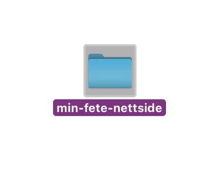
Opprett en mappe på skrivebordet ditt med et navn som representerer nettsiden din. Du kan kalle den hva du vil, men bruk kun små bokstaver, ikke ÆØÅ, og - eller _ istedenfor mellomrom.
Dette er en fin huskeregel for navngiving av alle filer du skal bruke på nettsiden.
Din første HTML-fil
Hvis du ikke allerede har lastet ned et program for å skrive kode, gjør det nå! Du kan se forslag til kode-editorer i forrige del. I eksemplene i denne guiden kommer jeg til å bruke Sublime Text, som er gratis.
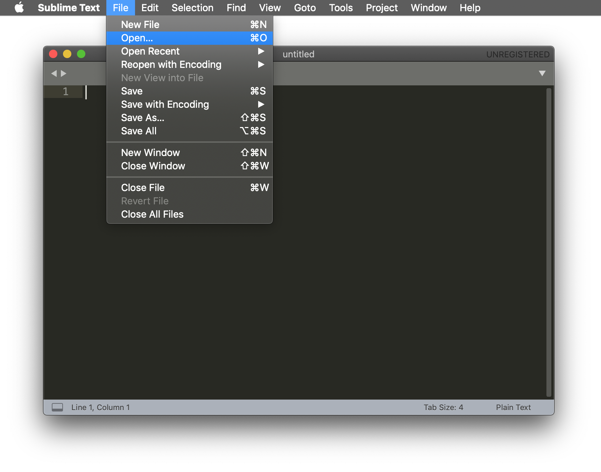
Start kodeprogrammet når det er ferdig installert, klikk File → Open og velg mappen du nettopp opprettet for nettsiden din.
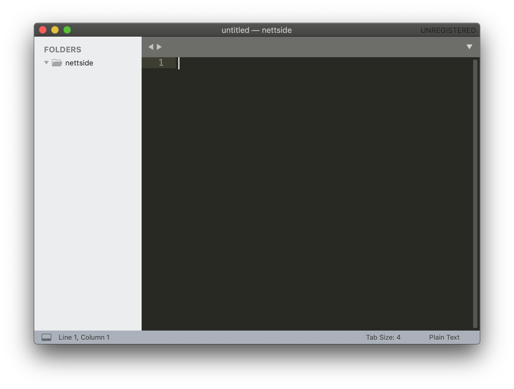
Når du har åpnet mappen skal du se dette ('nettside' vil være navnet du ga mappen).
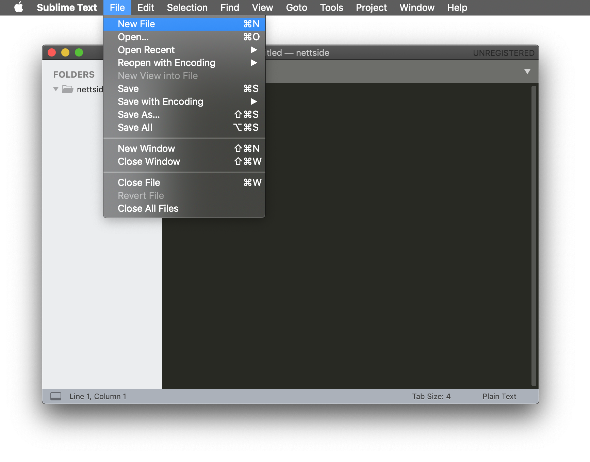
Klikk så på File → New file (eller CMD + N) for å opprette en ny fil.
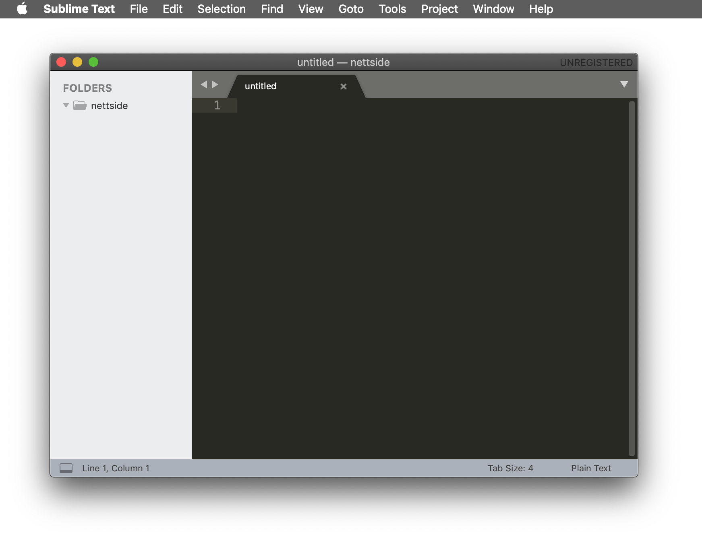
Når du har opprettet en ny fil vil det vises en ny, tom fane i kodeeditor-vinduet, med teksten "untitled".
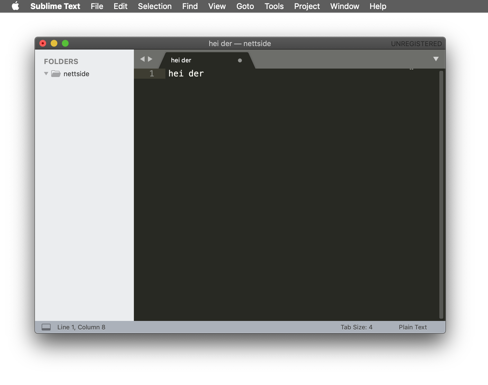
Gi filen noe innhold. Dette er kun for å demonstrere, og kan være hva som helst. Vi legger inn ekte kode senere.
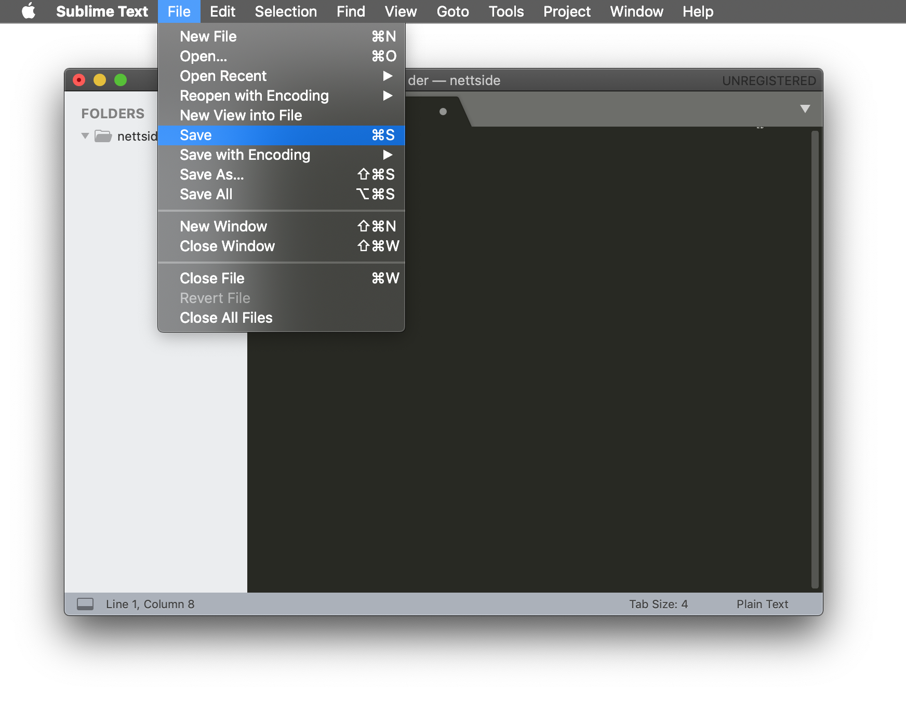
Klikk deretter File → Save (eller CMD + S) for å lagre fila i nettsidemappa.
Når nettsiden senere skal gjøres tilgjengelig på internett via en adresse (aka et domene), trenger serveren å vite hvilken fil den skal servere først, altså hva som er forsiden. Serveren leter da etter en fil som heter index.html. Dette er standard for alle nettsider. "Index" er navnet på forsiden, mens endelsen ".html" sier at det er en HTML-fil.
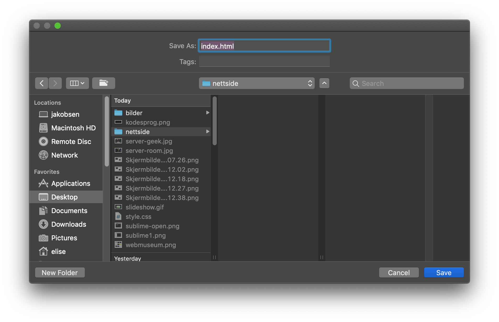
Pass på at du kaller fila index.html, og at du lagrer den i riktig mappe!
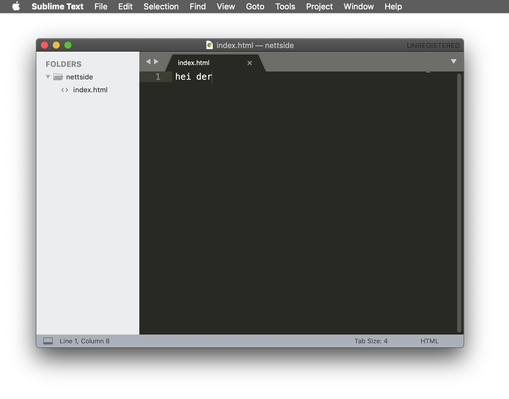
Når du har lagret fila i riktig mappe vil du se at den dukker opp i kolonnen til venstre.
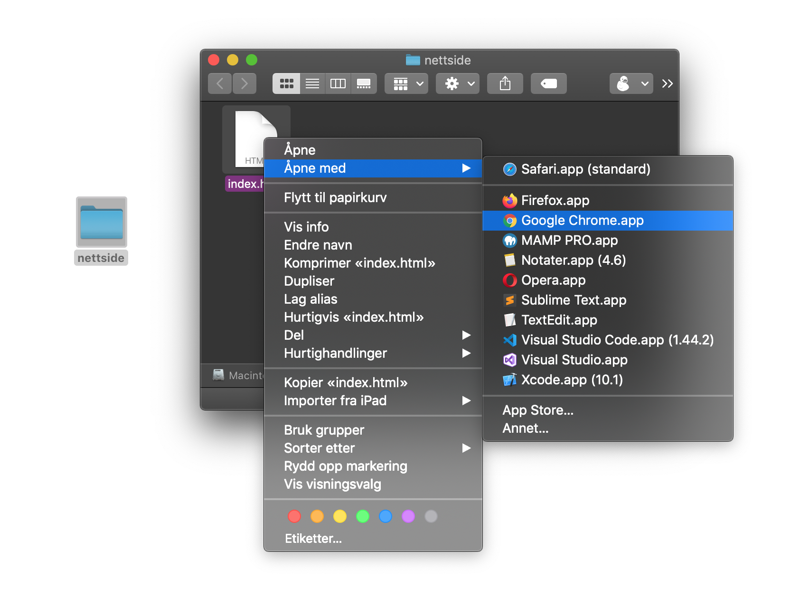
Nå kan du gå tilbake til skrivebordet og dobbeltklikke på nettsidemappa for å åpne den. Der vil du se index.html-fila du nettopp laget. Den kan du høyreklikke på, og velge din foretrukne nettleser.
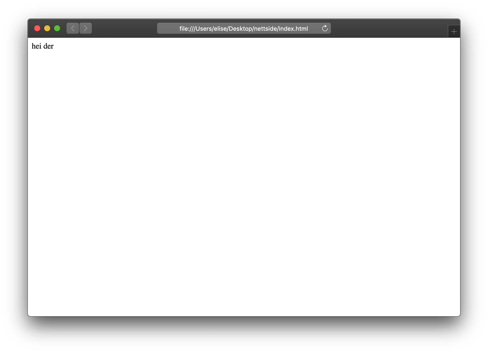
Gratulerer med å ha laget din første HTML-fil! Om du nå hadde lastet opp denne mappa på en server og koblet den til et domene, for eksempel min-fete-nettside.no, ville de som gikk inn på den adressa sett det samme som du ser her, selv om vi ennå ikke har skrevet noe ekte HTML-kode.
HTML-syntaks
Datamaskiner er skikkelig dumme. De vet ikke noe mer enn det vi forteller dem gjennom kode, og følger blindt våre instruksjoner.
Hvis vi har én liten feil i koden, kan det ødelegge hele visningen av nettsidefila. Derfor er det viktig å alltid følge reglene for hvordan kode skal skrives.
HTML-tagger
All HTML-kode består av såkalte "tagger". De består av tegnene <, > og / i sammenheng med ulike navn HTML-språket har for innholdselementer. Disse navnene kommer vi tilbake til senere, men noen eksempler er h1 for overskrift nivå 1 (heading), p for tekstavsnitt (paragraph), og img for bilder.
<tagnavn>
Innholdet kommer her!
</tagnavn>
Et HTML-element må alltid "lukkes" med en tilsvarende tag som den elementet starter med, bare med en skråstrek i tillegg som forteller at det er en avslutning. Som i all språklig grammatikk finnes det noen unntak, men det kommer vi tilbake til!
Mellomrom, linjeskift og indentering i koden kan hjelpe til å gjøre den enklere å lese. Det er det samme hvordan du velger å bruke dette, for nettleseren ignorerer de ekstra mellomrommene og linjeskiftene når den skal vise fila.
Ressurser
dontfeartheinternet.com har en kort video som forklarer HTML-syntaks på en skikkelig inn-med-teskje måte
Head, body og footer
Alle HTML-filer starter med samme grunnleggende struktur. Vi må gi info om HTML-dokumentets tittel og språk, markere opp innholdet, og følge visse regler for å være sikker på at fila leses riktig av alle nettlesere.
Aller først!
Å kalle fila for etellerannet.html er ikke nok for å definere hvilken type dokument det er. Det finnes mange ulike nettlesere, og for å være helt sikker på at alle leser fila riktig er det et par kodelinjer som må med i alle HTML-filer. Disse tre linjene sier klart og tydelig fra: HER KOMMER HTML-KODE!
<!doctype html>
<html>
her kan du begynne å skrive HTML!
</html>
Head
I HTML-dokumentets "hode" skriver vi metainformasjonen, som sidens tittel, hvilket språk den er skrevet på, etc. Dette kan for eksempel være informasjon som brukes av søkemotorer som Google for å kategorisere innhold og vite når din nettside skal dukke opp.
<!doctype html>
<html>
<head>
</head>
</html>
Det er vanlig å bruke tabs eller 2-4 mellomrom foran linjene for å gjøre det synlig hvilke HTML-elementer som hører til inni hverandre.
Disse linjene trenger du i Head-taggen
Tittel
<title>Min fete nettside</title>
<link rel="icon" href="favicon.ico">
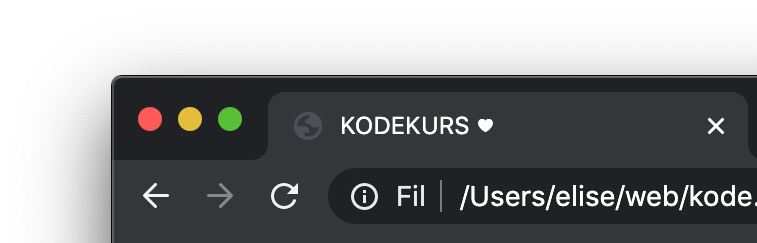
Tittelen er navnet på siden, og vil dukke opp i faner i nettleseren, om noen lagrer nettsiden som bokmerke, og når den dukker opp som søkeresultat i Google. Alle HTML-dokumenter må ha en tittel.
Karaktersett
<meta charset="utf-8">
Dette er den eneste meta-taggen vi absolutt MÅ ha. Den definerer hvilket karaktersett som skal brukes for å lese fila. Enkelt forklart fungerer karaktersettet litt som en ordbok. Datamaskiner forstår som du kanskje vet bare tegnene 0 og 1, eller rettere sagt de elektriske signalene av og på, men det er sinnssykt tidkrevende og kjedelig for et menneske å skulle skrive kode med kun 0 og 1 tilsvarende der man ønsker at datamaskinen skal gjøre. Derfor har vi utviklet kodespråk som lar oss skrive noe som ligner mer på engelsk, som deretter oversettes til 0 og 1 eller av/på inni datamaskinen. Karaktersett definerer hvordan koden skal oversettes. Litt som en ordbok, altså. En grundigere forklaring av karaktersett og akkurat UTF-8 finner du her på Reddit/r/ELI5.
Sjekk ut denne siden for en nærmere forklaring på hva de ulike HTML-taggene i head kan være og hva de betyr.
Body
I HTML-dokumentets "kropp" ligger alt innholdet som skal være synlig for de som besøker nettsiden.
<!doctype html>
<html>
<head>
</head>
<body>
her kommer innholdet!
</body>
</html>
Legg merke til at jeg igjen har lagt inn ekstra mellomrom for å synliggjøre at innholdet hører til mellom body-taggene. Dette ser kanskje litt teit ut nå, men vil hjelpe til å gjøre dokumentet mer oversiktlig når vi får mange linjer med HTML etter hverandre.
Footer
HTML-dokumentets "fot" er en del av "kroppen", altså ligger inni body-taggen. Footer er et valgfritt element, men brukes ofte som en gjentagende komponent i bunnen på alle sider, der man finner for eksempel kontaktinfo, adresse, og lenker til sosiale medier.
<!doctype html>
<html>
<body>
her kommer innholdet!
<footer>
<a href="#" class="to-top">Til toppen</a>
her ligger det noe greier i bunnen av siden
</footer>
</body>
</html>
Slik ser HTML-dokumentet ut med alle de tre elementene:
<!doctype html>
<html>
<head>
<meta charset="utf-8">
<title>Min fete nettside</title>
<link rel="icon" href="favicon.ico">
</head>
<body>
jeg har masse innhold bare gidder ikke legge det inn ennå
<footer>
<a href="#" class="to-top">Til toppen</a>
men send meg mail og følg meg på insta
</footer>
</body>
</html>
Det er helt i orden om du vil kopiere denne koden og bruke det som starten på din første HTML-fil.
Når du har skrevet inn denne HTML-koden i din egen fil, vil kunne du se hvordan kode-editoren er hjelpsom med å gjøre koden mer lettlest ved bruk av farger og highlights.